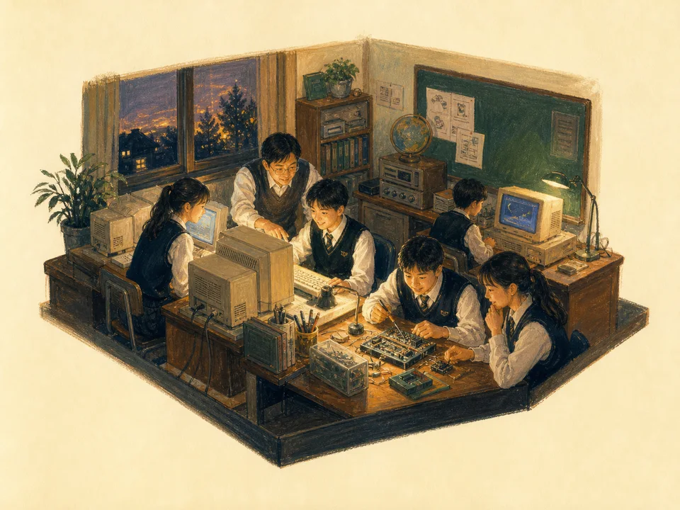
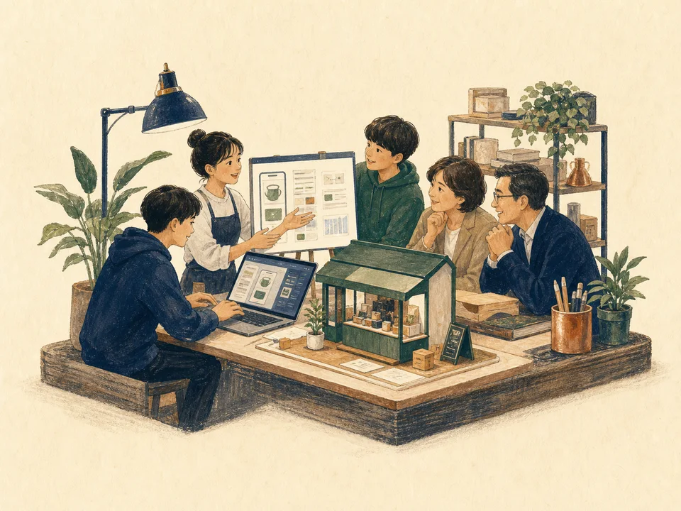
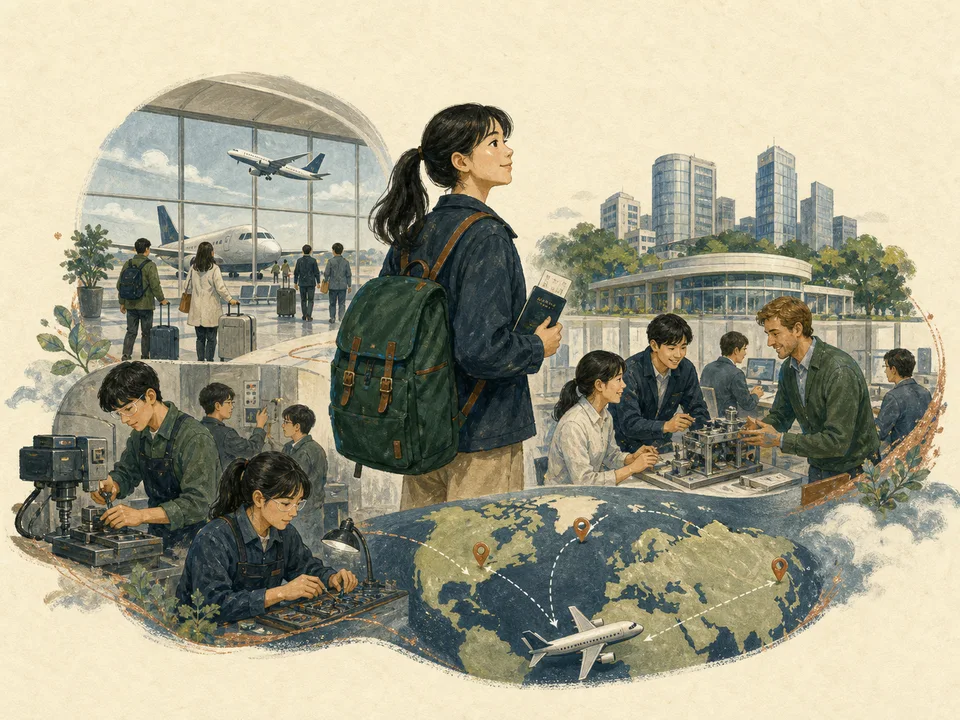
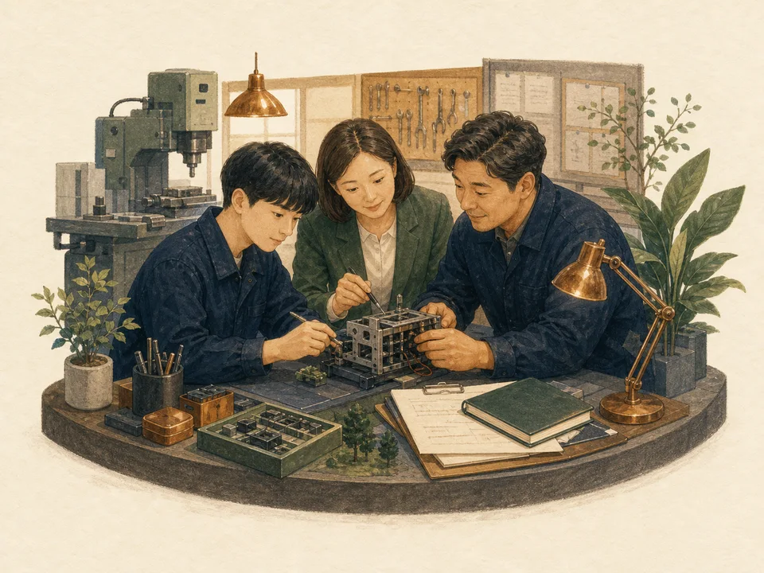

30 Years In Education
교육현장 30년
개인의 이력보다 학생 · 선생님 · 학교 · 기업과 함께 만든 변화의 기록입니다.

01 · 1991~꺼지지 않은 컴퓨터실전산부 · 무료 공부방 · 학생 성장이야기 펼치기 →
02 · 진로와 창업경험으로 배우는 진로중기청 인력양성 · 비즈쿨 · 창업이야기 펼치기 →
03 · 더 넓은 세계글로벌현장학습4개국 · 현지 교육 · 인턴십이야기 펼치기 →
04 · 제도와 나눔산학일체형 도제학교학교경영 · 정책자문 · 교육 나눔이야기 펼치기 →
EDUCATION & TECHNOLOGY
교실에서 시작한 작은 실천이,
교실에서 시작한 작은 실천이,
AI 시대의 더 넓은 기회로 이어집니다.
학생들이 형편이나 출발선 때문에 기회를 잃지 않도록 무료 공부방과 컴퓨터동아리, 진로·취업·글로벌현장학습을 이어 왔습니다. 그 과정에서 학생들의 실제 성장과 성취를 함께 만들었고, 이 경험은 이제 AI를 바르게 활용해 더 많은 학습자에게 기회를 돌려주는 설탕과소금의 기준이 되었습니다.
FOUNDATION교육현장 30년교실·학교·교육행정의 실제 경험
DESIGNER정보·컴퓨터 1급 정교사컴퓨터동아리와 디지털 학습 지도
CONTINUATIONAI 시대에 피어나는 실천오래된 교육의 뜻을 더 많은 학습자에게 확장
RESPONSIBILITY학생의 기회를 먼저기술과 서비스의 방향을 교육의 공정성에 맞춤
Four Chapters
네 개의 이야기
핵심은 먼저, 자세한 기록은 펼쳐서.
0123년간 꺼지지 않은 컴퓨터실전산부 · 무료 공부방 · 학생 성장
1991년 교단에서 시작해 1998년 멀티미디어실과 함께 본격화했습니다. 월·수·금 방과후, 수업료 없이 학생들과 홈페이지·애니메이션·정보올림피아드·창업을 공부했습니다.
- 14년 연속 밤샘 동아리 운영
- 전국대회 1위 7회
- DAUM 공식지원 동아리 · 대한민국 인재상 · 전국방송
02진로를 실제 경험으로중소기업 인력양성 · 창업비즈쿨
2011년부터 2017년까지 비공업계 전국 최초로 특성화고 중소기업 인력양성사업을 운영했습니다.
- 창업비즈쿨 8년 · 경북 선도학교 4년
- 청소년 비즈쿨 전국교사협의회장 2년
- 소프트웨어·창업·취업을 학교 안에서 연결
03학생의 세계를 넓히다미국 · 중국 · 체코 · 싱가포르
2013년부터 2019년까지 현지 교육기관과 연계한 글로벌현장학습을 운영했습니다.
- 경북교육청 최초 사무직 인턴십
- 우수사업단 4회
- MBC 전국시대 3회 소개
04현장을 제도와 사업으로산학일체형 도제학교 · 학교경영 · 정책자문
교사에서 교감, 산학일체형 도제학교 운영, 교육청 지원단과 정책자문으로 역할을 넓혔습니다.
- 산학일체형 도제학교 S등급 1회 · A등급 3회
- 창업일반 교과서 공저
- 교육청·산업연구원·전국상업경진대회 자문
Timeline
걸어온 길
정보·컴퓨터 교사
경주정보고 28년 6개월
중소기업 인력양성
비공업계 전국 최초 사업 운영
창업비즈쿨
8년 · 경북 선도학교 4년 · 전국교사협의회장 2년
글로벌현장학습
7년 · 4개국 · 우수사업단 4회
산학일체형 도제학교
S등급 1회 · A등급 3회
교감
학교경영과 직업교육 혁신
교장 승진 후 명예퇴직
30년 교육 여정을 현장 지원으로 이음
현장 지원
교육청 지원단 · 연구회
이 경험을 다음 세대와 잇습니다.
학생의 기회 · 교사의 수업 · 학교의 변화